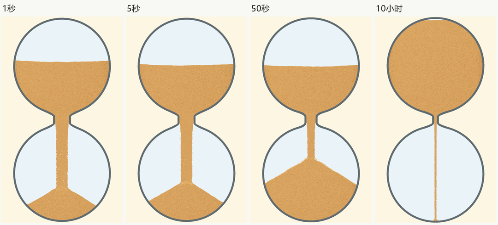
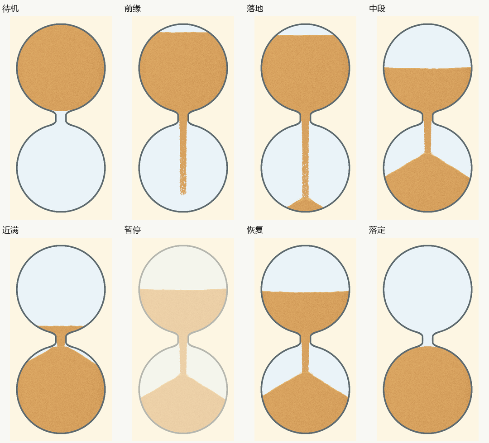
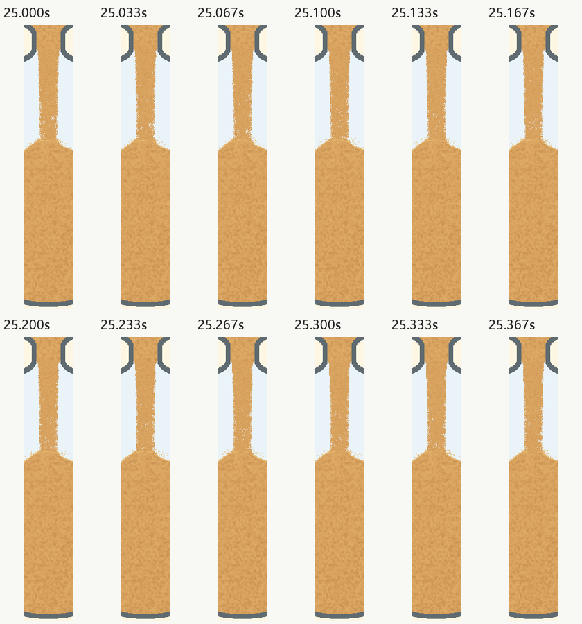

3.8：颈宽、颗粒与近满接收
2026-10-23。冻结源码已完成PC取证与独立对抗性复查，已发现的阻挡均已修复并重查。本页仅覆盖本轮外观、相邻状态及用户要求的PC绘制工作量，不代表Android、音频、实际屏幕刷新或完整应用验收。最终决定见当前审核决定，证据身份见本版记录。
本轮实现
颈内净宽按球内直径定义：1～5秒为15%，10小时达到3%，中间按对数时长参数作幂插值，50秒约9.88%。球体尺寸不变，出口出生范围为可见粒子半径及微小横移留出余量。每颗短粒及其固定细节随真实粒子下落；粗档保留粒子数量，避免代表图元重叠成实心杆。没有整束软管摆动或随时间随机挖洞。
总容量保留100%。近满后飞溅受净空限制，接收区保留很薄、局部的纹理活动；位移随净空平滑缩小到正常表面的50%，断供余砂落定后停止。暂停时落点闪光也使用同一冻结时钟。

检查项目与证据
| 项目 | 实际核对 | 限制 |
|---|---|---|
| 容器与口径 | 低分辨率55帧、高分辨率17帧、回退4帧；实际净口径逐项符合函数，沙量账本合计为1。 | 不把口径正确代替动态自然。 |
| 上沙与颈内 | 沿用已有局部下行材质，原图没有新的横向蒙版或颜色台阶；稳态材质混合为1，暂停保持。 | 没有另加塌陷、漩涡或全仓流动。 |
| 沙柱、边缘与接续 | 默认、5秒、粗细两端、最细颈及末段共462个原始连续帧，核对真实粒子二维轨迹、出生可见边界、回收接触与上传Mesh。出口最大像素宽比约1.0174，无整宽空层或整束摆动反例。 | 覆盖率及状态不是自然度的充分条件，另有正常尺寸原图和连续帧审阅。 |
| 局部实际下行 | 240次/秒逻辑采样的61张真实GL图像，60对中49对达到匹配置信度并向下移动；期望约1.493px/采样，冻结和倒流负例被拒绝。 | 11对低置信度不能算逐像素追踪；该采样率不是显示FPS，速度量具仅对金沙局部有效。 |
| 落点与近满 | 5/50秒全程真实时间录像；末1%仍取到2/29帧，低净空接收取到3/129帧。固定49秒几何和其余时钟，只改变接收相位，93像素变化、最大通道差6；关闭该层负例0变化。 | 接收区整体哈希只作辅助，不能独立证明表层在动；纹理效果刻意局部、轻微。 |
| 暂停与收尾 | 真实视频402/3160帧；暂停28/108帧图像摘要完全一致。计时归零后在途沙继续落下，主粒子和飞溅均归零、下腔沙量为1后才结束录像。 | 没有把计时归零等同落定。 |
| 配色与尺度 | 六配色、粗细两端及400×800、1080×1848原图。 | 粗档自由粒子仍比静止沙体更疏细；不声称二者每一颗纹理尺度相同。 |

实录与连续帧
5秒完整实录（含0.5秒暂停及落定） · 50秒完整实录（含2秒暂停及落定）
录像无插帧，编码时间戳来自真实墙钟。审阅采用原始连续解码帧、时间戳、局部像素位移及真实粒子轨迹；不将静态图板说成完整视频已播放。正常尺寸观感仍可由上述实录直接复核。

5秒实录连续帧 · 50秒实录连续帧 · 5秒末段与落定 · 50秒末段与落定 · 六配色与档位


PC单帧工作量
相同1080×1848、50秒周期、25秒起点、同种子，每版3轮×300帧。包含更新、绘制及GPU完成等待，排除取图编码。基线为GitHub已发布3.7提交8011965，候选为本页冻结源码。
| 指标 | 3.7 | 3.8 |
|---|---|---|
| 平均工作耗时 | 4.231ms | 4.484ms |
| 最慢1%平均耗时 | 6.722ms | 6.849ms |
| 最慢帧 | 7.137ms | 7.735ms |
原预算不变，三轮分别满足平均≤16.67ms、最慢1%≤20ms、最慢帧≤50ms。未为性能减少粒子或玻璃细节；加宽口径后发射数增加。这不是实屏或Android FPS。
对抗性审核与发布
失败证据、严重程度及修复复查。审核决定未关闭或证据不符时发布必须失败；推送时再核对当前决定、记录、证据和源码属于同一HEAD。修改应用源码会使当前证据失效。
未检查：Android运行、音频、真实屏幕刷新、10小时完整计时、每种颜色的逐帧像素速度。它们未被登记为通过。